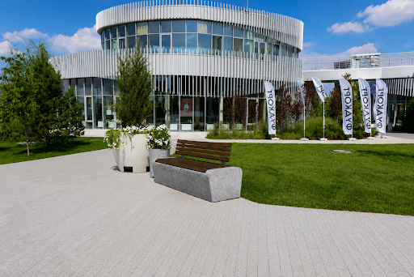
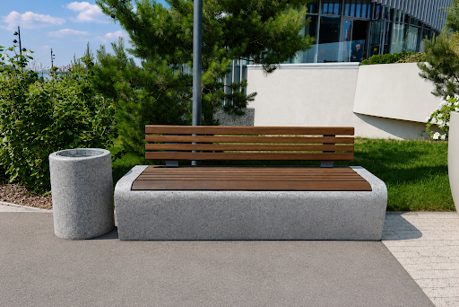
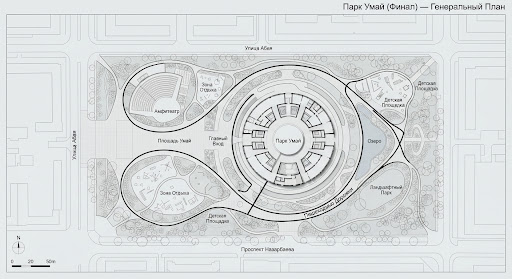

Парк Умай
Флагманский проект благоустройства. Соединение архитектурной строгости и природного спокойствия.

01 / ГЛОБАЛЬНЫЙ ВИД. АРХИТЕКТУРНЫЕ ФОРМЫ И ЛАНДШАФТНАЯ ИНТЕГРАЦИЯ.
Философия долговечности
- МАТЕРИАЛ Монолитный бетон M500
- ОБЛИЦОВКА Натуральный гранит
- СРОК СЛУЖБЫ 50+ лет эксплуатации
- ИЗНОСОСТОЙКОСТЬ Высшая категория

02 / ДЕТАЛИЗАЦИЯ. ТЕКСТУРЫ И ПРИРОДНЫЕ МАТЕРИАЛЫ.
Технические характеристики
Проектирование
Расчет нагрузок с учетом сейсмической активности региона и климатических перепадов.
Производство
Каждая деталь лавочек и малых архитектурных форм проходит заводской контроль качества.
Монтаж
Использование скрытых крепежных систем для достижения эффекта монолитности конструкции.
Локация объекта
Парк Умай расположен в центральной части нового делового квартала, являясь его визуальным и функциональным ядром.

03 / ГЕНЕРАЛЬНЫЙ ПЛАН. ФУНКЦИОНАЛЬНОЕ ЗОНИРОВАНИЕ.